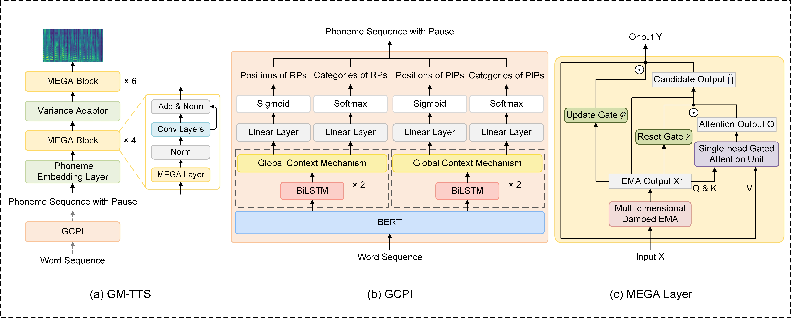

<!DOCTYPE html>
<!-- saved from url=(0033)https://leiyi420.github.io/HierarchicalEmoTTS/ -->
<html lang="en-US"><head><meta http-equiv="Content-Type" content="text/html; charset=UTF-8">
    

<!-- Begin Jekyll SEO tag v2.7.1 -->
<title>
	A Long-Form Speech Synthesis Using Only Sentence-Level Data with Length Extrapolation and LLM Contextual Enrichment
</title>
<meta name="generator" content="Jekyll v3.9.0">
<meta property="og:title" content="TODO: title">
<meta property="og:locale" content="en_US">
<link rel="canonical" href="https://leiyi420.github.io/CSEmoTransfer">
<meta property="og:url" content="https://leiyi420.github.io/CSEmoTransfer">
<meta name="twitter:card" content="summary">
<!-- End Jekyll SEO tag -->

    <meta name="viewport" content="width=device-width, initial-scale=1">
    <meta name="theme-color" content="#157878">
    <link rel="stylesheet" href="style.css">
  </head>
  <body data-new-gr-c-s-check-loaded="14.1001.0" data-gr-ext-installed="">
    <section class="page-header">
    <h2 class="project-name">A Long-Form Speech Synthesis Using Only Sentence-Level Data with Length Extrapolation and LLM Contextual Enrichment
    </h2>
    </section>

<section class="main-content">

<h2>0. Contents</h2>
<ul>
  <li><a href="#abstract">Abstract</a></li>
  <li><a href="#proposed_model">Proposed Model</a></li>
  <li><a href='#subjective_result'>Subjective Evaluation</a></li>
  <ul>
  		<li><a href="#compared_methods">Compared Methods</a></li>
	 	<li><a href="#domain_specific_short_text">Sample of domain-specific short text</a></li>
	 	<li><a href="#out_of_domain_long_text">Sample of out-of-domain long text</a></li>
  </ul>

  <li><a href="#summary">Summary</a></li>
</ul>

<br>
<h2 id="abstract">1. Abstract<a name="abstract"></a></h2>
<p> 
The majority of the current speech synthesis research focuses mainly on utterance-level text-to-speech (TTS) while neglecting how to synthesize long-form speech. Compared with utterance-level TTS, long-form TTS faces two challenges. Firstly, the lack of long-form 
training data results in TT models producing speech with pronunciation errors and pitch irregularities. Secondly, the absence of suitable pauses within the input text reduces the naturalness of the generated speech. To settle the above issues, we propose the Global-information-enhanced Classification Pause Insertion model (GCPI), which improve speech prosody by inserting classified pauses from the global information level. Subsequently, we introduce the Moving average Equipped Gated Attention (MEGA) as the encoder and decoder to model long-context sequences. Combining these two modules, we propose GM-TTS, a TTS model that can robustly synthesize long-form speeches when only utterance-level training data are available. The experimental results show that the proposed GMTTS can produce high-quality long-form speech without reducing the performance of short speech synthesis.	

</p>

<!--<br><br>-->

<h2> 2. Proposed Model<a name="proposed_model"></a></h2>
<center></center>


<h2>3. Subjective Evaluation<a name="subjective_result"></a></h2>
<h3>3.1 Compared Methods<a name="compared_methods"></a></h3>
<p><strong>Ground Truth:</strong> The original samples from the dataset. </p>
<p><strong>Fastspeech2:</strong> The original FastSpeech2. </p>
<p><strong>G-TTS:</strong> FastSpeech2 with GCPI, using predicted pauses to improve speech prosody.</p>
<p><strong>M-TTSTTS:</strong> A modified FastSpeech2 that uses the MEGA block to replace the encoder and decoder</p>
<p><strong>GM-TTS:</strong> Proposed methods</p>

<h3>3.2 Sample of domain-specific short text<a name="domain_specific_short_text"></a></h3>
<!-- <h3>Convert the emotion expresssions from the source speaker to the neutral target speakers without emotional training data.</h3> -->
<table>
   <thead>
    	<tr>
		  	<th style="text-align: center"><strong>Transcription</strong></th>
	      	<th style="text-align: center"><strong>Ground Truth</strong></th>
	        <th style="text-align: center"><strong>FastSpeech2</strong></th>
	        <th style="text-align: center"><strong>G-TTS</strong></th>
	        <th style="text-align: center"><strong>M-TTS</strong></th>
	        <th style="text-align: center"><strong>GM-TTS(Proposed)</strong></th>
	    </tr>
  	</thead> 
  	<tbody>
		<tr>
			<td style="text-align: center">1. 随着环境呀，因素呀有改变呀。</td>
            <td style="text-align: left"><audio src="mysamples/short-text/ground-truth/000304.wav" controls="" preload=""></audio></td>
	        <td style="text-align: left"><audio src="mysamples/short-text/Fastspeech2/000304.wav" controls="" preload=""></audio></td>
            <td style="text-align: left"><audio src="mysamples/short-text/G-TTS/000304.wav" controls="" preload=""></audio></td>
            <td style="text-align: left"><audio src="mysamples/short-text/M-TTS/000304.wav" controls="" preload=""></audio></td>
            <td style="text-align: left"><audio src="mysamples/short-text/GM-TTS/000304.wav" controls="" preload=""></audio></td>
		</tr>
		<tr>
			<td style="text-align: center">2. 绿柳低垂，江水哽咽。</td>

            <td style="text-align: left"><audio src="mysamples/short-text/ground-truth/000655.wav" controls="" preload=""></audio></td>
	        <td style="text-align: left"><audio src="mysamples/short-text/Fastspeech2/000655.wav" controls="" preload=""></audio></td>
            <td style="text-align: left"><audio src="mysamples/short-text/G-TTS/000655.wav" controls="" preload=""></audio></td>
            <td style="text-align: left"><audio src="mysamples/short-text/M-TTS/000655.wav" controls="" preload=""></audio></td>
            <td style="text-align: left"><audio src="mysamples/short-text/GM-TTS/000655.wav" controls="" preload=""></audio></td>
		</tr>
		<tr>
			<td style="text-align: center">3. 因相貌太差而被拒绝的求职遭遇屡见报端。</td>
            <td style="text-align: left"><audio src="mysamples/short-text/ground-truth/000807.wav" controls="" preload=""></audio></td>
	        <td style="text-align: left"><audio src="mysamples/short-text/Fastspeech2/000807.wav" controls="" preload=""></audio></td>
            <td style="text-align: left"><audio src="mysamples/short-text/G-TTS/000807.wav" controls="" preload=""></audio></td>
            <td style="text-align: left"><audio src="mysamples/short-text/M-TTS/000807.wav" controls="" preload=""></audio></td>
            <td style="text-align: left"><audio src="mysamples/short-text/GM-TTS/000807.wav" controls="" preload=""></audio></td>
		</tr>
		<tr>
			<td style="text-align: center">4. 在药房，温家宝询问维吾尔医药和中药的区别。</td>
            <td style="text-align: left"><audio src="mysamples/short-text/ground-truth/000984.wav" controls="" preload=""></audio></td>
	        <td style="text-align: left"><audio src="mysamples/short-text/Fastspeech2/000984.wav" controls="" preload=""></audio></td>
            <td style="text-align: left"><audio src="mysamples/short-text/G-TTS/000984.wav" controls="" preload=""></audio></td>
            <td style="text-align: left"><audio src="mysamples/short-text/M-TTS/000984.wav" controls="" preload=""></audio></td>
            <td style="text-align: left"><audio src="mysamples/short-text/GM-TTS/000984.wav" controls="" preload=""></audio></td>
		</tr>
		<tr>
			<td style="text-align: center">5. 由此引发了轰动一时的中俄列车大劫案。</td>
            <td style="text-align: left"><audio src="mysamples/short-text/ground-truth/001727.wav" controls="" preload=""></audio></td>
	        <td style="text-align: left"><audio src="mysamples/short-text/Fastspeech2/001727.wav" controls="" preload=""></audio></td>
            <td style="text-align: left"><audio src="mysamples/short-text/G-TTS/001727.wav" controls="" preload=""></audio></td>
            <td style="text-align: left"><audio src="mysamples/short-text/M-TTS/001727.wav" controls="" preload=""></audio></td>
            <td style="text-align: left"><audio src="mysamples/short-text/GM-TTS/001727.wav" controls="" preload=""></audio></td>
		</tr>
		<tr>
			<td style="text-align: center">6. 每个个体获得应有的尊重，要活得有尊严一点。</td>
            <td style="text-align: left"><audio src="mysamples/short-text/ground-truth/002043.wav" controls="" preload=""></audio></td>
	        <td style="text-align: left"><audio src="mysamples/short-text/Fastspeech2/002043.wav" controls="" preload=""></audio></td>
            <td style="text-align: left"><audio src="mysamples/short-text/G-TTS/002043.wav" controls="" preload=""></audio></td>
            <td style="text-align: left"><audio src="mysamples/short-text/M-TTS/002043.wav" controls="" preload=""></audio></td>
            <td style="text-align: left"><audio src="mysamples/short-text/GM-TTS/002043.wav" controls="" preload=""></audio></td>
		</tr>
		<tr>
			<td style="text-align: center">7. 避免因学生上学难度增加造成过早辍学。</td>
            <td style="text-align: left"><audio src="mysamples/short-text/ground-truth/003662.wav" controls="" preload=""></audio></td>
	        <td style="text-align: left"><audio src="mysamples/short-text/Fastspeech2/003662.wav" controls="" preload=""></audio></td>
            <td style="text-align: left"><audio src="mysamples/short-text/G-TTS/003662.wav" controls="" preload=""></audio></td>
            <td style="text-align: left"><audio src="mysamples/short-text/M-TTS/003662.wav" controls="" preload=""></audio></td>
            <td style="text-align: left"><audio src="mysamples/short-text/GM-TTS/003662.wav" controls="" preload=""></audio></td>
		</tr>
		<tr>
			<td style="text-align: center">8. 大年初五这天，民间通行的食俗是吃饺子，俗称捏小人嘴。</td>
            <td style="text-align: left"><audio src="mysamples/short-text/ground-truth/006856.wav" controls="" preload=""></audio></td>
	        <td style="text-align: left"><audio src="mysamples/short-text/Fastspeech2/006856.wav" controls="" preload=""></audio></td>
            <td style="text-align: left"><audio src="mysamples/short-text/G-TTS/006856.wav" controls="" preload=""></audio></td>
            <td style="text-align: left"><audio src="mysamples/short-text/M-TTS/006856.wav" controls="" preload=""></audio></td>
            <td style="text-align: left"><audio src="mysamples/short-text/GM-TTS/006856.wav" controls="" preload=""></audio></td>
		</tr>
		<tr>
			<td style="text-align: center">9. 谁去拯救被埋在瓦砾废墟中的骨肉同胞？</td>
            <td style="text-align: left"><audio src="mysamples/short-text/ground-truth/007503.wav" controls="" preload=""></audio></td>
	        <td style="text-align: left"><audio src="mysamples/short-text/Fastspeech2/007503.wav" controls="" preload=""></audio></td>
            <td style="text-align: left"><audio src="mysamples/short-text/G-TTS/007503.wav" controls="" preload=""></audio></td>
            <td style="text-align: left"><audio src="mysamples/short-text/M-TTS/007503.wav" controls="" preload=""></audio></td>
            <td style="text-align: left"><audio src="mysamples/short-text/GM-TTS/007503.wav" controls="" preload=""></audio></td>
		</tr>
		<tr>
			<td style="text-align: center">10. 如此贴地气，不但丝毫无损他的形象，反倒赢得更多拥趸。</td>
            <td style="text-align: left"><audio src="mysamples/short-text/ground-truth/008152.wav" controls="" preload=""></audio></td>
	        <td style="text-align: left"><audio src="mysamples/short-text/Fastspeech2/008152.wav" controls="" preload=""></audio></td>
            <td style="text-align: left"><audio src="mysamples/short-text/G-TTS/008152.wav" controls="" preload=""></audio></td>
            <td style="text-align: left"><audio src="mysamples/short-text/M-TTS/008152.wav" controls="" preload=""></audio></td>
            <td style="text-align: left"><audio src="mysamples/short-text/GM-TTS/008152.wav" controls="" preload=""></audio></td>
		</tr>
	</tbody>
</table>
<h3>3.3 Sample of out-of-domain long text<a name="out_of_domain_long_text"></a></h3>
<table>

  	<tbody>
      	<tr>
            <td style="text-align: left" colspan=4>1. 进入汛期，生态环境部印发通知，要求各地迅即采取有效措施，切实防范汛期和退水期发生重大水污染事件，全力保障饮用水水源环境安全。为避免出现随雨水排污现象，各地也在加强雨季水污染整治行动。根据雨情变化，河北省秦皇岛市探索建立起强降雨精准管控机制，有效消减陆地上的污染物入河、入海，从而保障近岸海域水质稳定。八月十二日，秦皇岛下起了大雨，政府部门派出多路工作人员巡查摸排，很快发现东港路上出现污水外溢点。相应的应急预案随即启动，六十多台吸污车很快出动，三处外溢点的污水被抽排进入另一条污水管网，七座污水处理厂同时满负荷运行，持续加大污水收集处理能力，保障水质稳定达标排放。四小时后，这些污水外溢隐患被成功排除。
      	</tr>  
      	<tr>     
            <th style="text-align: center"><strong>Fastspeech2</strong></th>
            <th style="text-align: center"><strong>G-TTS</strong></th> 
            <th style="text-align: center"><strong>M-TTS</strong></th>
            <th style="text-align: center"><strong>GM-TTS(Proposed)</strong></th> 
      	</tr>
		<tr>
	     	<td style="text-align: center"><audio src="mysamples/long-form_speech/FastSpeech2/000014.wav" controls="" preload=""></audio></td>
            <td style="text-align: left"><audio src="mysamples/long-form_speech/G-TTS/000014.wav" controls="" preload=""></audio></td>
            <td style="text-align: left"><audio src="mysamples/long-form_speech/M-TTS/000014.wav" controls="" preload=""></audio></td> 
            <td style="text-align: center"><audio src="mysamples/long-form_speech/GM-TTS/000014.wav" controls="" preload=""></audio></td>
		</tr>
		<tr>
            <td style="text-align: left" colspan=4>2. 封丘站目前共建立了三十八个长期观测与试验研究样地，多块样地建立至今已超过三十年。“你看这块地里，仅施有机肥的试验区的玉米经过十五年左右才赶上施化肥的试验区玉米的产量，小麦耗时更长，但施有机肥的土壤会肥沃很多。”朱安宁介绍道。有机质含量是评估一块土地肥沃程度的核心指标之一，朱安宁告诉记者，三十多年过去，现在仅施有机肥的地里，土壤有机质含量几乎是同时期仅施化肥土壤的两倍。“在当前国家粮食安全刚性需求条件下，有机肥的施用要有科学适宜的替代化肥比例，以实现土壤地力与粮食产能的协同提升。这是长期试验观测才能得到的结果，也是为国家‘藏粮于地、藏粮于技’战略提供数据支撑。” 其实，建立野外站是国际科学界通行做法。始建于一八四三年的英国洛桑试验站，迄今已有一百八十年历史，那里保存着距今近两百年的土壤、植物和肥料样品。
		</tr>  
      	<tr>     
            <th style="text-align: center"><strong>Fastspeech2</strong></th>
            <th style="text-align: center"><strong>G-TTS</strong></th> 
            <th style="text-align: center"><strong>M-TTS</strong></th>
            <th style="text-align: center"><strong>GM-TTS(Proposed)</strong></th> 
      	</tr>
		<tr>
	     	<td style="text-align: center"><audio src="mysamples/long-form_speech/FastSpeech2/000025.wav" controls="" preload=""></audio></td>
            <td style="text-align: left"><audio src="mysamples/long-form_speech/G-TTS/000025.wav" controls="" preload=""></audio></td>
            <td style="text-align: left"><audio src="mysamples/long-form_speech/M-TTS/000025.wav" controls="" preload=""></audio></td> 
            <td style="text-align: center"><audio src="mysamples/long-form_speech/GM-TTS/000025.wav" controls="" preload=""></audio></td>
		</tr>
		
		<tr>
            <td style="text-align: left" colspan=4>3. 运动重在坚持。采用自身抗阻运动结合有氧运动的方式效果更为显著。家长要帮助孩子养成规律科学的运动习惯，最好进行户外活动，可适当增加趣味性。开始锻炼时，运动速度和运动量要适宜，以可耐受为限，逐渐增加，不要操之过急，以运动后轻松愉快、不感到疲劳为原则。另外，还需注意培养良好的睡眠习惯：睡前避免剧烈运动、避免进食甜食，不要熬夜，保证充足的睡眠时间。帮孩子建立良好的人际关系：丰富孩子的兴趣爱好，增强孩子的自信，减少出现情绪性暴饮暴食的机会。培养正确的认知：多给孩子宣讲体重管理和科学饮食习惯的重要性及好处，并宣传肥胖的危害，孩子在面对“诱惑”时就更容易用认知来冷却自己进食的欲望。
		</tr>  
      	<tr>     
            <th style="text-align: center"><strong>Fastspeech2</strong></th>
            <th style="text-align: center"><strong>G-TTS</strong></th> 
            <th style="text-align: center"><strong>M-TTS</strong></th>
            <th style="text-align: center"><strong>GM-TTS(Proposed)</strong></th> 
      	</tr>
		<tr>
	     	<td style="text-align: center"><audio src="mysamples/long-form_speech/FastSpeech2/000034.wav" controls="" preload=""></audio></td>
            <td style="text-align: left"><audio src="mysamples/long-form_speech/G-TTS/000034.wav" controls="" preload=""></audio></td>
            <td style="text-align: left"><audio src="mysamples/long-form_speech/M-TTS/000034.wav" controls="" preload=""></audio></td> 
            <td style="text-align: center"><audio src="mysamples/long-form_speech/GM-TTS/000034.wav" controls="" preload=""></audio></td>
		</tr>
		
		<tr>
            <td style="text-align: left" colspan=4>4. “离职后，你要去外地找你对象吗？”“我哪有对象啊！”离职聚餐上，九零后朱宽表示自己单身，让同事们惊讶不已。毕竟在大家的印象中，朱宽一直有女朋友，二人交往多年，感情稳定。不是突然分手，不是误解，这一切的一切都是源于朱宽的“恋爱人设”。据朱宽的同事于三顺回忆，刚入职时，朱宽被问有没有对象，他的回答就是：“有，在外地。”平时朱宽外出游玩或吃饭，问他“和对象出去啊”，他也只是笑笑，并不否认。情人节，朱宽甚至给自己定了一束包装精致的红色玫瑰花。于三顺说，快递员把花送到公司时，刚进门就喊朱宽的名字，“我们都以为这是他女朋友送的，还起哄来着”。
		</tr>  
      	<tr>     
            <th style="text-align: center"><strong>Fastspeech2</strong></th>
            <th style="text-align: center"><strong>G-TTS</strong></th> 
            <th style="text-align: center"><strong>M-TTS</strong></th>
            <th style="text-align: center"><strong>GM-TTS(Proposed)</strong></th>  
      	</tr>
		<tr>
	     	<td style="text-align: center"><audio src="mysamples/long-form_speech/FastSpeech2/000041.wav" controls="" preload=""></audio></td>
            <td style="text-align: left"><audio src="mysamples/long-form_speech/G-TTS/000041.wav" controls="" preload=""></audio></td>
            <td style="text-align: left"><audio src="mysamples/long-form_speech/M-TTS/000041.wav" controls="" preload=""></audio></td> 
            <td style="text-align: center"><audio src="mysamples/long-form_speech/GM-TTS/000041.wav" controls="" preload=""></audio></td>
		</tr>
		
		<tr>
            <td style="text-align: left" colspan=4>5. “有些牧民的设备虽已陈旧，但他们却是最前沿的摄影师，因为贴近、熟悉真实生活，能够细致地感受、体察当地的变化。”赶赴玉树采风后，河南摄影师高均海表示，全国各地摄影协会应举办常态化培训、研修、工作坊等，帮助牧民摄影师更好地讲述身边的故事。即将于八月二十一日至二十六日在玉树州举办的“同饮一江水·光影耀澜湄”二零二三澜湄国际影像周活动，也将为“当地”摄影师提供与外界交流对话、互通互鉴的平台。该活动面向澜湄流域国家征集图片和视频，邀请主流媒体、网络红人、文化界代表，赴玉树体验江源风情，并将组织中外摄影师进行地面、空中、日间、夜间多维度影像创作。“玉树是摄影家的天堂，不仅因为这里纯净自然的好风光，更因为当地有这么多自发背起相机的牧民，常年跋山涉水，记录家乡之美。”此前来到玉树采风的西藏摄影师顿珠表示。
		</tr>  
      	<tr>     
            <th style="text-align: center"><strong>Fastspeech2</strong></th>
            <th style="text-align: center"><strong>G-TTS</strong></th> 
            <th style="text-align: center"><strong>M-TTS</strong></th>
            <th style="text-align: center"><strong>GM-TTS(Proposed)</strong></th> 
      	</tr>
		<tr>
	     	<td style="text-align: center"><audio src="mysamples/long-form_speech/FastSpeech2/000053.wav" controls="" preload=""></audio></td>
            <td style="text-align: left"><audio src="mysamples/long-form_speech/G-TTS/000053.wav" controls="" preload=""></audio></td>
            <td style="text-align: left"><audio src="mysamples/long-form_speech/M-TTS/000053.wav" controls="" preload=""></audio></td> 
            <td style="text-align: center"><audio src="mysamples/long-form_speech/GM-TTS/000053.wav" controls="" preload=""></audio></td>
		</tr>
		
		<tr>
            <td style="text-align: left" colspan=4>6. 夏日的海岛夜晚，繁星漫天，四周虫鸣伴随着海浪声，“声声”不息。在浙江舟山普陀青石子，随着第一颗流星划破天际，期盼已久的观星者纷纷通过观测设备，观赏美丽景观。“流星眨眼不见了，如此近距离地看到流星，让人仿佛置身童话的世界，大自然真的太美了。”当地学生祁嘉文如是说。这是“千岛之城”舟山开展“星辰大海”计划中的剪影。众所周知，拥有两千零八十五个岛屿的舟山被称为“千岛之城”，海域辽阔、海岛众多，拥有普陀山、东极岛、花鸟岛等“网红”景点，正走出旅游产品特色化、旅游资源集聚化、服务标准国际化的海岛独特风景线。二零二二年五月，该市启动实施“星辰大海”计划，聚焦城市滨海岸线独特地理空间，致力于打造一批海洋景观设施、文化标识工程、精品文旅产业项目，实现“串珠成链、串链成带、串带成环”，形成文化旅游产业融合发展和城市滨海岸线融合共生的新格局。
		</tr>  
      	<tr>     
            <th style="text-align: center"><strong>Fastspeech2</strong></th>
            <th style="text-align: center"><strong>G-TTS</strong></th> 
            <th style="text-align: center"><strong>M-TTS</strong></th>
            <th style="text-align: center"><strong>GM-TTS(Proposed)</strong></th> 
      	</tr>
		<tr>
	     	<td style="text-align: center"><audio src="mysamples/long-form_speech/FastSpeech2/000054.wav" controls="" preload=""></audio></td>
            <td style="text-align: left"><audio src="mysamples/long-form_speech/G-TTS/000054.wav" controls="" preload=""></audio></td>
            <td style="text-align: left"><audio src="mysamples/long-form_speech/M-TTS/000054.wav" controls="" preload=""></audio></td> 
            <td style="text-align: center"><audio src="mysamples/long-form_speech/GM-TTS/000054.wav" controls="" preload=""></audio></td>
		</tr>
		
		<tr>
            <td style="text-align: left" colspan=4>7. 事实上，在舟山，历来不乏观星爱好者。该市还有一颗以城市命名的小行星——“舟山星”。据介绍，这颗星是中国科学院紫金山天文台一九八一年发现的编号为四九二五号的小行星，也被命名为“舟山星”。这颗小行星也让舟山这个城市的名字进入了浩瀚宇宙，镶在了太空星辰。随着海岛慢生活的风靡，风格各异的海岛旅游产品吸引了越来越多人的目光。在传统热门海岛旅游项目人气爆棚的情况下，不少人正把目光转向新兴小众项目——观星。“当前，我们的星空旅游处在快速成长的萌芽期，近年来舟山参加观星、拍星活动的人越来越多，正兴起一波‘观星热’。”陈康翔表示，观星门槛并不高，天文学同样并非“高不可攀”的学科，“近观星辰大海，舟山欢迎大家。”而今，经过一年多的探索实践，“星辰大海”计划初显成效。在舟山，一条包含“观星、揽月、望海”的海岛理想生活风情海岸带，正在众人面前展开。
		</tr>  
      	<tr>     
            <th style="text-align: center"><strong>Fastspeech2</strong></th>
            <th style="text-align: center"><strong>G-TTS</strong></th> 
            <th style="text-align: center"><strong>M-TTS</strong></th>
            <th style="text-align: center"><strong>GM-TTS</strong><br/><strong>(Proposed)</strong></th> 
      	</tr>
		<tr>
	     	<td style="text-align: center"><audio src="mysamples/long-form_speech/FastSpeech2/000055.wav" controls="" preload=""></audio></td>
            <td style="text-align: left"><audio src="mysamples/long-form_speech/G-TTS/000055.wav" controls="" preload=""></audio></td>
            <td style="text-align: left"><audio src="mysamples/long-form_speech/M-TTS/000055.wav" controls="" preload=""></audio></td> 
            <td style="text-align: center"><audio src="mysamples/long-form_speech/GM-TTS/000055.wav" controls="" preload=""></audio></td>
		</tr>
		
		<tr>
            <td style="text-align: left" colspan=4>8. 日前，国家文物局官网发布了《关于开展第四次全国文物普查准备工作的通知》，提出按照党中央、国务院决策部署，二零二三年将启动第四次全国文物普查。国家文物局局长李群透露，二零二三年还将筹备启动第九批全国重点文物保护单位申报遴选，统筹做好各级各类文物资源特别是低级别文物保护管理，加强文物保护工程监督管理，实施一批世界文化遗产、石窟石刻、文物建筑重大保护项目。低级别文物如何确定？它们又为何得到“特别关照”？所谓低级别文物，是相比于全国重点文物保护单位和省级文物保护单位这些高级别文物而言的。
		</tr>  
      	<tr>     
            <th style="text-align: center"><strong>Fastspeech2</strong></th>
            <th style="text-align: center"><strong>G-TTS</strong></th> 
            <th style="text-align: center"><strong>M-TTS</strong></th>
            <th style="text-align: center"><strong>GM-TTS(Proposed)</strong></th> 
      	</tr>
		<tr>
	     	<td style="text-align: center"><audio src="mysamples/long-form_speech/FastSpeech2/000065.wav" controls="" preload=""></audio></td>
            <td style="text-align: left"><audio src="mysamples/long-form_speech/G-TTS/000065.wav" controls="" preload=""></audio></td>
            <td style="text-align: left"><audio src="mysamples/long-form_speech/M-TTS/000065.wav" controls="" preload=""></audio></td> 
            <td style="text-align: center"><audio src="mysamples/long-form_speech/GM-TTS/000065.wav" controls="" preload=""></audio></td>
		</tr>
		
		<tr>
            <td style="text-align: left" colspan=4>9. 八月八日，为期十二天的成都大运会将正式闭幕。当来自世界各地的年轻人齐聚“蓉城”，有人在这里实现梦想，有人在这里收获感动，还有人自带“社牛”属性，成为本届大赛上的“显眼包”。 有网友说，大运会上的显眼包是不分国界的。在大运会开幕后不久，阿根廷代表团的“显眼包”就因在摆渡车上载歌载舞，登上了热搜榜。瞅这欢乐的气氛，不知道的还以为他们是来旅游的。可怜小小的摆渡车，承受了这个年纪不该承受的重量。其实，从大运会开幕以来，阿根廷代表团就一直很“嗨皮”。有人在场边为队友打鼓助威，还有队员跟着中国球迷高唱“梅西之歌”。
		</tr>  
      	<tr>     
            <th style="text-align: center"><strong>Fastspeech2</strong></th>
            <th style="text-align: center"><strong>G-TTS</strong></th> 
            <th style="text-align: center"><strong>M-TTS</strong></th>
            <th style="text-align: center"><strong>GM-TTS(Proposed)</strong></th> 
      	</tr>
		<tr>
	     	<td style="text-align: center"><audio src="mysamples/long-form_speech/FastSpeech2/000069.wav" controls="" preload=""></audio></td>
            <td style="text-align: left"><audio src="mysamples/long-form_speech/G-TTS/000069.wav" controls="" preload=""></audio></td>
            <td style="text-align: left"><audio src="mysamples/long-form_speech/M-TTS/000069.wav" controls="" preload=""></audio></td> 
            <td style="text-align: center"><audio src="mysamples/long-form_speech/GM-TTS/000069.wav" controls="" preload=""></audio></td>
		</tr>
		
		<tr>
            <td style="text-align: left" colspan=4>10. “第一次跟着教练开始练武术的时候，每天都是压柔韧压腿，一把鼻涕一把泪的。想过放弃，但是我想既然是自己的选择，那就要坚持下去。”来自甘肃天水今年十九岁的王璞表示，因为从小喜欢看武侠小说爱上了武术，习武五年虽辛苦，却也收获了武术带给自己的好体魄和自信的状态。作为传统体育运动项目，武术有修身、养性、健体之效。如今，有不少“九零后”“零零后”的青少年也开始热衷于这项有着悠久历史的运动。近日，千余名“武林高手”齐聚“中国武术之乡”甘肃平凉崆峒山脚下，参加第四届平凉崆峒武术节暨第三届“甘小侠”西北五省区青少年演武大会进行比武切磋。
		</tr>  
      	<tr>     
            <th style="text-align: center"><strong>Fastspeech2</strong></th>
            <th style="text-align: center"><strong>G-TTS</strong></th> 
            <th style="text-align: center"><strong>M-TTS</strong></th>
            <th style="text-align: center"><strong>GM-TTS(Proposed)</strong></th> 
      	</tr>
		<tr>
	     	<td style="text-align: center"><audio src="mysamples/long-form_speech/FastSpeech2/000074.wav" controls="" preload=""></audio></td>
            <td style="text-align: left"><audio src="mysamples/long-form_speech/G-TTS/000074.wav" controls="" preload=""></audio></td>
            <td style="text-align: left"><audio src="mysamples/long-form_speech/M-TTS/000074.wav" controls="" preload=""></audio></td> 
            <td style="text-align: center"><audio src="mysamples/long-form_speech/GM-TTS/000074.wav" controls="" preload=""></audio></td>
		</tr>
		
  	</tbody>
</table>


<h2 id="summary">4. Conclusion<a name="conclusion"></a></h2>
<p>  
In this paper, we propose GM-TTS, mainly consisting of GCPI and MEGA, aiming to produce high-quality long-form speech with only sentence-level training data. GCPI uses GCM to refine the features extracted by BERT and BiLSTM to improve the accuracy of pause prediction. Meanwhile, MEGA blocks enhance the robustness of TTS models for long sequence inputs. Subjective and objective experimental results show that the proposed GCPI and GM-TTS models outperform the baseline. Moreover, comparative experiments demonstrate that both GCPI and MEGA are indispensable components in long-form speech synthesis, and their combination further enhances the model’s performance. In the future, we plan to explore how to extract contextual features with only sentence-level training data to further enrich the prosody of synthesized long-form speech.

</p>


  <br>
  <hr>
  <br>
      <footer class="site-footer">
            <span class="site-footer-credits">This page was generated by <a href="https://pages.github.com/">GitHub Pages</a>.</span>
      </footer>
    </section>
</body></html>

